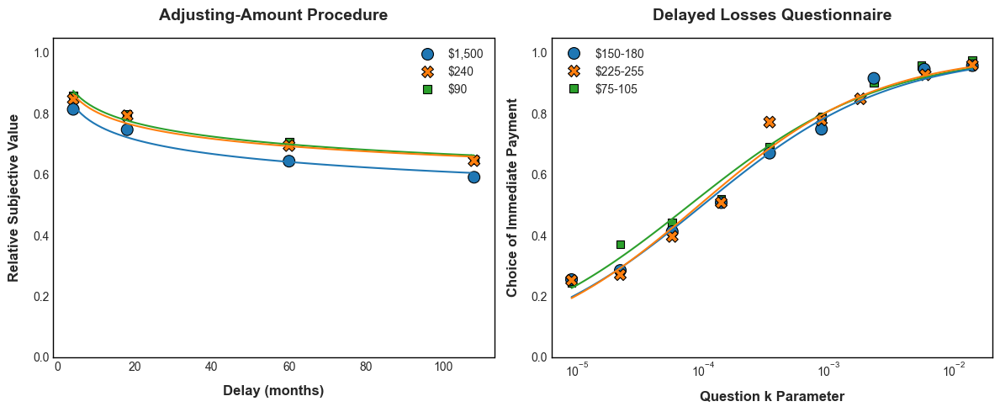

# --- 1. Environment Setup ---
# This cell installs all the required Python packages.
# It is commented out by default. Uncomment and run if the packages are not yet installed.
# import sys
# !{sys.executable} -m pip install pandas numpy scipy lmfit statsmodels seaborn scikit-learn pingouinValidating Efficient Methods for Measuring Intertemporal Choice
A Methodological Comparison of Two Procedures for Assessing Delayed Losses
This Jupyter Notebook provides a complete Python-based replication of the analyses from the publication:
Wan, H., Green, L., & Myerson, J. (2024). Delayed monetary losses: Do different procedures and measures assess the same construct?. Behavioural Processes, 222, 105101. https://doi.org/10.1016/j.beproc.2024.105101
Project Objective
The goal of this study is methodological validation. It formally tests whether a brief, 27-item survey (the Delayed Losses Questionnaire, DLQ) yields a valid and reliable measure of delay discounting when compared to the more resource-intensive Adjusting-Amount (Adj-Amt) procedure.
Analysis Workflow
- Setup: Imports all necessary Python libraries and defines custom functions.
- Data Processing: Cleans and transforms the raw data, calculating the four key discounting measures.
- Group-Level Analysis: Visualizes aggregate choice patterns (Figure 1 replication) and fits non-linear models to assess data quality.
- Reliability & Validity Analysis: Assesses the reliability of measures within each procedure and the convergent validity between them.
- Choice Pattern Analysis: Categorizes and compares individual response styles across procedures.
The data are publicly available on the Open Science Framework: https://osf.io/emb2q/.
# --- 2. Imports and Custom Functions ---
# --- Core Libraries ---
import pandas as pd
import numpy as np
import warnings
from scipy.optimize import curve_fit
from scipy.stats import gmean, chi2_contingency
# --- Statistics and Modeling ---
from sklearn.metrics import auc as calculate_auc, r2_score
import statsmodels.formula.api as smf
import statsmodels.api as sm
import pingouin as pg
# --- Visualization ---
import matplotlib.pyplot as plt
import seaborn as sns
# --- Global Settings ---
warnings.filterwarnings('ignore')
plt.style.use('seaborn-v0_8-whitegrid')
pd.options.display.float_format = '{:.3f}'.format
def set_plot_theme(ax, title="", xlabel="", ylabel=""):
"""Applies a consistent, publication-quality theme to a Matplotlib axes object."""
ax.set_title(title, fontsize=14, fontweight='bold', pad=15)
ax.set_xlabel(xlabel, fontsize=12, fontweight='bold', labelpad=10)
ax.set_ylabel(ylabel, fontsize=12, fontweight='bold', labelpad=10)
for spine in ax.spines.values():
spine.set_edgecolor('black')
spine.set_linewidth(1)
ax.set_facecolor('white')
ax.grid(False)
ax.tick_params(axis='both', which='major', labelsize=10)
if ax.get_legend():
ax.legend(frameon=False)Data Processing
The raw data is loaded, filtered to the final sample (N = 431), and then transformed to calculate the four primary discounting scores: - For the Adj-Amt procedure: 1. auc_adj_amt: Area Under the Curve (atheoretical). 2. logk_adj_amt: The log-transformed k parameter from a simple hyperbolic model (theoretical). - For the DLQ procedure: 1. prop_imm_dlq: The proportion of immediate choices (atheoretical). 2. logk_dlq: The log-transformed k parameter estimated from the choice pattern (theoretical).
# --- 3. DATA LOADING AND PROCESSING ---
# --- Load and Clean Raw Data ---
data_raw = pd.read_csv("DelayLoss.csv", index_col=0)
# Filter to final sample based on criteria from the paper
data_clean = data_raw[
(data_raw['check'] == 7) & (data_raw['provider'] != "MTurk")
].copy()
data_clean['id'] = data_clean.groupby('id').ngroup() + 1
data_clean = data_clean.drop(columns=['provider'])
# --- Calculate Scores for the Adjusting-Amount (Adj-Amt) Procedure ---
def calculate_adj_amt_scores(df_group):
"""Calculates AuC and log(k) for one participant's Adj-Amt data."""
auc = calculate_auc(df_group['iv'] / 108, df_group['value'])
def hyperbola(iv, k): return 1 / (1 + k * iv)
try:
params, _ = curve_fit(hyperbola, df_group['iv'], df_group['value'], p0=[0.01])
logk = np.log(params[0])
except (RuntimeError, ValueError):
logk = np.nan
return pd.Series({'auc_adj_amt': auc, 'logk_adj_amt': logk})
adj_amt_scores = data_clean[data_clean['procedure'] == "aa"].groupby(['id', 'amt']).apply(calculate_adj_amt_scores).reset_index()
# --- Calculate Scores for the Delayed Losses Questionnaire (DLQ) ---
def calculate_dlq_scores(df_group):
"""Calculates proportion of immediate choices and log(k) for one participant's DLQ data."""
prop_immediate = df_group['value'].mean()
choices = df_group['value'].values
k_values = df_group['iv'].values
if all(choices == 1): logk = np.log(k_values.min())
elif all(choices == 0): logk = np.log(k_values.max())
else:
n_consistent = [sum((choices == 0) & (k_values <= k) | (choices == 1) & (k_values >= k)) for k in k_values]
indifference_ks = k_values[np.where(n_consistent == np.max(n_consistent))]
logk = np.log(gmean(indifference_ks))
return pd.Series({'prop_imm_dlq': prop_immediate, 'logk_dlq': logk})
dlq_scores = data_clean[data_clean['procedure'] == "mcq"].groupby(['id', 'amt']).apply(calculate_dlq_scores).reset_index()
# --- Combine All Scores into a Single Tidy Dataframe ---
scores_combined = pd.merge(adj_amt_scores, dlq_scores, on=['id', 'amt'], how='outer')
# --- Classify Individual Choice Patterns ---
# 1. Classify patterns for the Adj-Amt procedure
adj_amt_patterns_raw = data_clean[
(data_clean['procedure'] == 'aa') & (data_clean['amt'] != 3)
].groupby(['id', 'amt']).apply(lambda g: pd.Series({
'correlation': g['value'].corr(np.log(g['iv'])),
'mean_sv': g['value'].mean()
})).reset_index()
# Define global min/max for classification, as in the R script
min_val_aa = data_clean[data_clean['procedure'] == 'aa']['value'].min()
max_val_aa = data_clean[data_clean['procedure'] == 'aa']['value'].max()
# Apply classification logic
def classify_adj_amt(row):
corr = 0 if pd.isna(row['correlation']) else row['correlation']
if corr < 0 or row['mean_sv'] == min_val_aa: return "Typical"
if corr > 0: return "Atypical"
if row['mean_sv'] == max_val_aa: return "Always immediate"
return "Typical" # Fallback
adj_amt_patterns_raw['pattern'] = adj_amt_patterns_raw.apply(classify_adj_amt, axis=1)
# Check for consistency across amounts for each participant
adj_amt_patterns = adj_amt_patterns_raw.groupby('id')['pattern'].apply(
lambda g: g.iloc[0] if g.nunique() == 1 else "Inconsistent"
).reset_index(name='pattern_adj_amt')
# 2. Classify patterns for the DLQ procedure
dlq_patterns_raw = data_clean[
(data_clean['procedure'] == 'mcq') & (data_clean['amt'] != 2)
].groupby(['id', 'amt']).apply(lambda g: pd.Series({
'correlation': g['value'].corr(np.log(g['iv'])),
'mean_choice': g['value'].mean()
})).reset_index()
def classify_dlq(row):
corr = 0 if pd.isna(row['correlation']) else row['correlation']
if corr > 0 or row['mean_choice'] == 0: return "Typical"
if corr < 0: return "Atypical"
if row['mean_choice'] == 1: return "Always immediate"
return "Undefined" # Fallback
dlq_patterns_raw['pattern'] = dlq_patterns_raw.apply(classify_dlq, axis=1)
dlq_patterns = dlq_patterns_raw.groupby('id')['pattern'].apply(
lambda g: g.iloc[0] if g.nunique() == 1 else "Inconsistent"
).reset_index(name='pattern_dlq')
# 3. Join pattern classifications for the final contingency analysis
pattern_consistency = pd.merge(adj_amt_patterns, dlq_patterns, on="id")
print("Data processing complete.")Data processing complete.Group-Level Analysis
This section replicates Figure 1 from the publication, visualizing the aggregate discounting patterns for both procedures. The plots confirm that the data conform to established findings, and goodness-of-fit statistics confirm that the chosen non-linear models describe the data well.
# --- 4. GROUP-LEVEL ANALYSIS (FIGURE 1 REPLICATION) ---
# --- Prepare Group-Level Data ---
data_group_level = data_clean.groupby(['procedure', 'amt', 'iv']).agg(mean_value=('value', 'mean')).reset_index()
# --- Create Plots ---
fig, axes = plt.subplots(1, 2, figsize=(12, 5))
# Panel 1: Adjusting-Amount Procedure
adj_amt_grp = data_group_level[data_group_level['procedure'] == 'aa']
adj_amt_grp['amount_label'] = pd.Categorical(adj_amt_grp['amt'].replace({1: "$90", 2: "$240", 3: "$1,500"}))
sns.scatterplot(data=adj_amt_grp, x='iv', y='mean_value', hue='amount_label', style='amount_label', s=100, ax=axes[0], edgecolor='k')
# Fit and plot hyperboloid curves
for amount_cat in adj_amt_grp['amount_label'].unique():
subset = adj_amt_grp[adj_amt_grp['amount_label'] == amount_cat]
def hyperbola(iv, k, s): return 1 / (1 + np.exp(k) * iv)**s
try:
params, _ = curve_fit(hyperbola, subset['iv'], subset['mean_value'], p0=[-4, 1])
x_pred = np.linspace(subset['iv'].min(), subset['iv'].max(), 100)
axes[0].plot(x_pred, hyperbola(x_pred, *params), color=sns.color_palette()[list(adj_amt_grp['amount_label'].unique()).index(amount_cat)])
except RuntimeError:
pass
set_plot_theme(axes[0], title="Adjusting-Amount Procedure", xlabel="Delay (months)", ylabel="Relative Subjective Value")
# Panel 2: Delayed Losses Questionnaire
dlq_grp = data_group_level[data_group_level['procedure'] == 'mcq']
dlq_grp['amount_label'] = pd.Categorical(dlq_grp['amt'].replace({1: "$75-105", 2: "$150-180", 3: "$225-255"}))
sns.scatterplot(data=dlq_grp, x='iv', y='mean_value', hue='amount_label', style='amount_label', s=100, ax=axes[1], edgecolor='k')
# Fit and plot logistic curves
sns.regplot(data=dlq_grp, x='iv', y='mean_value', logistic=True, scatter=False, ci=None, ax=axes[1], line_kws={'lw': 2})
axes[1].set_xscale('log')
set_plot_theme(axes[1], title="Delayed Losses Questionnaire", xlabel="Question k Parameter", ylabel="Choice of Immediate Payment")
plt.tight_layout()
plt.show()
# --- Goodness-of-Fit (R-squared) ---
print("--- R-squared for Group-Level Fits ---")
adj_amt_r2 = adj_amt_grp.groupby('amount_label').apply(lambda g: r2_score(g['mean_value'], hyperbola(g['iv'], *curve_fit(hyperbola, g['iv'], g['mean_value'], p0=[-4,1])[0]))).rename('Adj-Amt R2')
print(adj_amt_r2)# --- Reliability Analysis ---
print("--- Reliability: Correlations Between Amounts ---")
behav_long = behav.melt(id_vars=['id', 'procedure', 'amt'], value_vars=['atheoretical', 'k'],
var_name='measure', value_name='score')
reliability_pivot = behav_long.pivot_table(index=['id', 'procedure', 'measure'], columns='amt', values='score')
print(reliability_pivot.groupby(['procedure', 'measure']).corr())
print("\n--- Reliability: Correlations Between Measures (Atheoretical vs. Theoretical) ---")
print(behav.groupby(['procedure', 'amt'])[['atheoretical', 'k']].corr().unstack().iloc[:, 1])Analysis of Choice Patterns
This section categorizes participants based on their response patterns (e.g., typical, always immediate, atypical) and examines the consistency of these patterns across the two procedures.
# --- 4. GROUP-LEVEL ANALYSIS (FIGURE 1 REPLICATION) ---
# --- Prepare Group-Level Data ---
data_group_level = data_clean.groupby(['procedure', 'amt', 'iv']).agg(mean_value=('value', 'mean')).reset_index()
# --- Create Plots ---
fig, axes = plt.subplots(1, 2, figsize=(12, 5))
# --- Panel 1: Adjusting-Amount Procedure ---
adj_amt_grp = data_group_level[data_group_level['procedure'] == 'aa']
adj_amt_grp['amount_label'] = pd.Categorical(adj_amt_grp['amt'].replace({1: "$90", 2: "$240", 3: "$1,500"}))
sns.scatterplot(data=adj_amt_grp, x='iv', y='mean_value', hue='amount_label', style='amount_label', s=100, ax=axes[0], edgecolor='k')
# Fit and plot hyperboloid curves
for amount_cat in adj_amt_grp['amount_label'].unique():
subset = adj_amt_grp[adj_amt_grp['amount_label'] == amount_cat]
def hyperbola(iv, k, s): return 1 / (1 + np.exp(k) * iv)**s
try:
params, _ = curve_fit(hyperbola, subset['iv'], subset['mean_value'], p0=[-4, 1])
x_pred = np.linspace(subset['iv'].min(), subset['iv'].max(), 100)
axes[0].plot(x_pred, hyperbola(x_pred, *params), color=sns.color_palette()[list(adj_amt_grp['amount_label'].cat.categories).index(amount_cat)])
except RuntimeError:
pass
axes[0].set_ylim(0, 1.05)
set_plot_theme(axes[0], title="Adjusting-Amount Procedure", xlabel="Delay (months)", ylabel="Relative Subjective Value")
# --- Panel 2: Delayed Losses Questionnaire ---
dlq_grp = data_group_level[data_group_level['procedure'] == 'mcq']
dlq_grp['amount_label'] = pd.Categorical(dlq_grp['amt'].replace({1: "$75-105", 2: "$150-180", 3: "$225-255"}))
sns.scatterplot(data=dlq_grp, x='iv', y='mean_value', hue='amount_label', style='amount_label', s=100, ax=axes[1], edgecolor='k')
# Fit and plot the custom logistic function from the R script
for amount_cat in dlq_grp['amount_label'].unique():
subset = dlq_grp[dlq_grp['amount_label'] == amount_cat]
# Define the custom logistic model used in the R code
def custom_logistic(log_k_iv, x, r):
return 1 / (1 + np.exp(-(np.log(log_k_iv) - x) * r))
try:
params, _ = curve_fit(custom_logistic, subset['iv'], subset['mean_value'], p0=[-10, 1], maxfev=5000)
# Generate prediction line on a log scale
x_pred = np.logspace(np.log10(subset['iv'].min()), np.log10(subset['iv'].max()), 100)
axes[1].plot(x_pred, custom_logistic(x_pred, *params), color=sns.color_palette()[list(dlq_grp['amount_label'].cat.categories).index(amount_cat)])
except RuntimeError:
pass
axes[1].set_xscale('log')
axes[1].set_ylim(0, 1.05)
set_plot_theme(axes[1], title="Delayed Losses Questionnaire", xlabel="Question k Parameter", ylabel="Choice of Immediate Payment")
plt.tight_layout()
plt.show()
# --- Goodness-of-Fit (R-squared) ---
print("--- R-squared for Group-Level Fits ---")
adj_amt_r2 = adj_amt_grp.groupby('amount_label', observed=True).apply(
lambda g: r2_score(g['mean_value'], hyperbola(g['iv'], *curve_fit(hyperbola, g['iv'], g['mean_value'], p0=[-4,1])[0]))
).rename('Adj-Amt R2')
print(adj_amt_r2)
# Added R-squared calculation for the DLQ procedure
print("\n--- R-squared for DLQ Group-Level Fits ---")
def r2_dlq_fit(g):
def model_func(log_k_iv, x, r): return 1 / (1 + np.exp(-(np.log(log_k_iv) - x) * r))
params, _ = curve_fit(model_func, g['iv'], g['mean_value'], p0=[-10, 1], maxfev=5000)
predictions = model_func(g['iv'], *params)
return r2_score(g['mean_value'], predictions)
dlq_r2 = dlq_grp.groupby('amount_label', observed=True).apply(r2_dlq_fit).rename('DLQ R2')
print(dlq_r2)
--- R-squared for Group-Level Fits ---
amount_label
$1,500 0.965
$240 0.957
$90 0.962
Name: Adj-Amt R2, dtype: float64
--- R-squared for DLQ Group-Level Fits ---
amount_label
$150-180 0.984
$225-255 0.976
$75-105 0.984
Name: DLQ R2, dtype: float64Reliability and Validity Analysis
This is the core of the study. Reliability is assessed by correlating measures within each procedure. Concurrent validity is checked by correlating atheoretical and theoretical measures. Finally, convergent validity is tested by correlating measures between the two procedures for the common loss amounts.
# --- 5. INDIVIDUAL-LEVEL RELIABILITY AND VALIDITY ---
# --- Within-Procedure Reliability (Alternate-Forms) ---
print("--- Reliability: Correlations Between Amounts Within Each Procedure ---")
# Pivot to wide format to easily calculate correlations between amount columns
auc_adj_amt_wide = scores_combined.pivot(index='id', columns='amt', values='auc_adj_amt')
prop_imm_dlq_wide = scores_combined.pivot(index='id', columns='amt', values='prop_imm_dlq')
print("Adj-Amt (AUC):\n", auc_adj_amt_wide.corr().round(3))
print("\nDLQ (Proportion Immediate):\n", prop_imm_dlq_wide.corr().round(3))
# --- Within-Procedure Concurrent Validity ---
print("\n--- Concurrent Validity: Correlations Between Atheoretical and Theoretical Measures ---")
print(scores_combined.groupby('amt')[['auc_adj_amt', 'logk_adj_amt']].corr().unstack().iloc[:,1].rename("Adj-Amt Corr"))
print(scores_combined.groupby('amt')[['prop_imm_dlq', 'logk_dlq']].corr().unstack().iloc[:,1].rename("DLQ Corr"))
# --- Between-Procedure Convergent Validity (Main Result) ---
# CORRECTED: This section now correctly matches the common amounts:
# - Adj-Amt Amount 1 ($90) vs. DLQ Amount 1 ($90 avg)
# - Adj-Amt Amount 2 ($240) vs. DLQ Amount 3 ($240 avg)
print("\n--- Convergent Validity: Correlations Between Procedures (Main Result) ---")
# Filter to the specific amounts for each procedure
adj_amt_90 = scores_combined[scores_combined['amt'] == 1][['id', 'auc_adj_amt', 'logk_adj_amt']]
dlq_90 = scores_combined[scores_combined['amt'] == 1][['id', 'prop_imm_dlq', 'logk_dlq']]
adj_amt_240 = scores_combined[scores_combined['amt'] == 2][['id', 'auc_adj_amt', 'logk_adj_amt']]
dlq_240 = scores_combined[scores_combined['amt'] == 3][['id', 'prop_imm_dlq', 'logk_dlq']]
# Merge the matched datasets
corr_df_90 = pd.merge(adj_amt_90, dlq_90, on='id')
corr_df_240 = pd.merge(adj_amt_240, dlq_240, on='id')
# Calculate and display correlations
results = {
"Amount_Match": ["$90 vs $90", "$240 vs $240"],
"Atheoretical_Corr": [
corr_df_90[['auc_adj_amt', 'prop_imm_dlq']].corr().iloc[0,1],
corr_df_240[['auc_adj_amt', 'prop_imm_dlq']].corr().iloc[0,1]
],
"Theoretical_Corr": [
corr_df_90[['logk_adj_amt', 'logk_dlq']].corr().iloc[0,1],
corr_df_240[['logk_adj_amt', 'logk_dlq']].corr().iloc[0,1]
]
}
print(pd.DataFrame(results).round(3))--- Reliability: Correlations Between Amounts Within Each Procedure ---
Adj-Amt (AUC):
amt 1 2 3
amt
1 1.000 0.782 0.636
2 0.782 1.000 0.763
3 0.636 0.763 1.000
DLQ (Proportion Immediate):
amt 1 2 3
amt
1 1.000 0.866 0.806
2 0.866 1.000 0.893
3 0.806 0.893 1.000
--- Concurrent Validity: Correlations Between Atheoretical and Theoretical Measures ---
amt
1 -0.960
2 -0.968
3 -0.967
Name: Adj-Amt Corr, dtype: float64
amt
1 -0.981
2 -0.982
3 -0.977
Name: DLQ Corr, dtype: float64
--- Convergent Validity: Correlations Between Procedures (Main Result) ---
Amount_Match Atheoretical_Corr Theoretical_Corr
0 $90 vs $90 0.735 0.728
1 $240 vs $240 0.777 0.773Analysis of Choice Patterns
Finally, this section examines whether individuals show consistent qualitative patterns of choice across the two procedures. A contingency table analysis tests if a participant’s classification on one procedure is significantly associated with their classification on the other.
# --- 6. ANALYSIS OF CHOICE PATTERNS ---
# --- Frequencies of Choice Patterns by Procedure ---
print("--- Frequencies of Choice Patterns by Procedure ---")
adj_amt_counts = pattern_consistency['pattern_adj_amt'].value_counts(normalize=True)
dlq_counts = pattern_consistency['pattern_dlq'].value_counts(normalize=True)
pattern_summary = pd.DataFrame({'Adj-Amt': adj_amt_counts, 'DLQ': dlq_counts})
print(pattern_summary.round(3))
# --- Contingency Table and Chi-Squared Test ---
print("\n--- Cross-Tabulation of Choice Patterns (Observed Counts) ---")
contingency_table = pd.crosstab(
pattern_consistency['pattern_adj_amt'],
pattern_consistency['pattern_dlq']
)
print(contingency_table)
# Perform Chi-Squared test
chi2, p, dof, expected = chi2_contingency(contingency_table)
print(f"\nChi-Squared Test:\nChi2 = {chi2:.2f}, p-value = {p:.4f}, df = {dof}")
print("\nExpected Frequencies:")
print(pd.DataFrame(expected, index=contingency_table.index, columns=contingency_table.columns).round(2))--- Frequencies of Choice Patterns by Procedure ---
Adj-Amt DLQ
Always immediate 0.165 0.155
Atypical 0.019 0.002
Inconsistent 0.193 0.084
Typical 0.624 0.759
--- Cross-Tabulation of Choice Patterns (Observed Counts) ---
pattern_dlq Always immediate Atypical Inconsistent Typical
pattern_adj_amt
Always immediate 56 0 10 5
Atypical 2 0 1 5
Inconsistent 8 0 13 62
Typical 1 1 12 255
Chi-Squared Test:
Chi2 = 296.31, p-value = 0.0000, df = 9
Expected Frequencies:
pattern_dlq Always immediate Atypical Inconsistent Typical
pattern_adj_amt
Always immediate 11.040 0.160 5.930 53.870
Atypical 1.240 0.020 0.670 6.070
Inconsistent 12.900 0.190 6.930 62.970
Typical 41.820 0.620 22.470 204.090